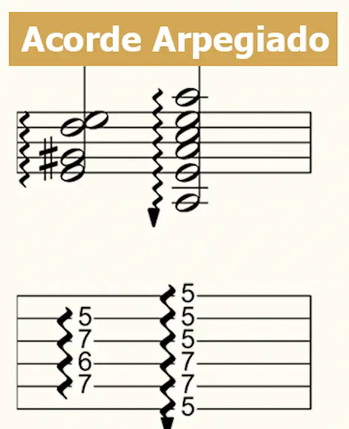

Hammer on
El "hammer on" es una ligadura ascendente. Si encuentras este símbolo significa que la segunda nota no
tendrás que golpearla con la púa sino producir el sonido directamente con el dedo de la mano izquierda.

En la imagen es el primer ejemplo. Toca el traste 5 y martillea el traste 7 con el dedo anular.
Pull off
El "pull off" es una ligadura descendente. Si encuentras este símbolo no tendrás que rasguear la nota con la púa,
deberás producir el sonido levantando el dedo de la mano izquierda. A veces es útil pellizcar suavemente mientras se retira el
dedo para dar más sonido a la nota.
En la imagen arriba es el segundo ejemplo. Toca el traste 7 y levanta el dedo anular para que suene el traste 5 pisado
por el índice.
Rasgueo (acorde arpegiado)

El rasgueo se escribe con una flecha o zig-zag. Rasguea las cuerdas en la dirección de la flecha, con cierto ritmo
dependiendo de el Tempo.